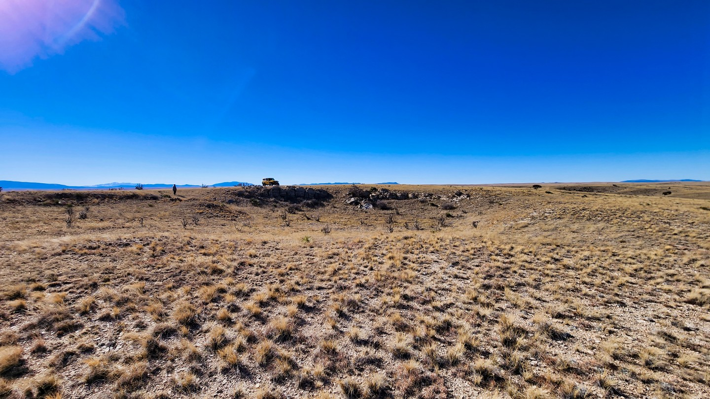
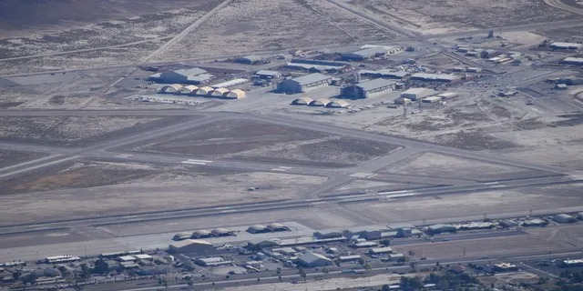
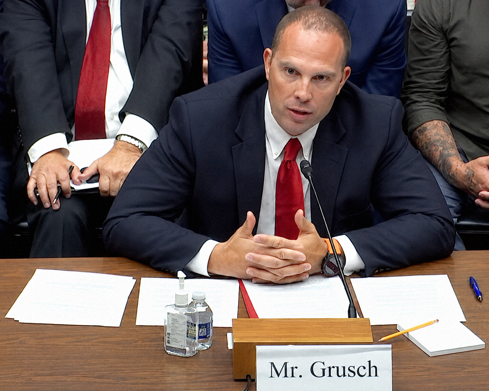
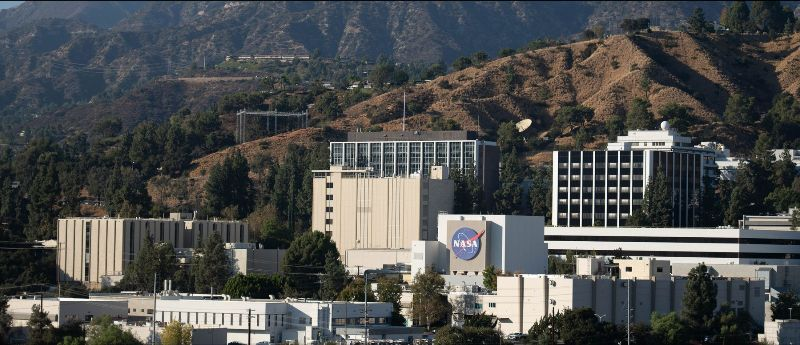
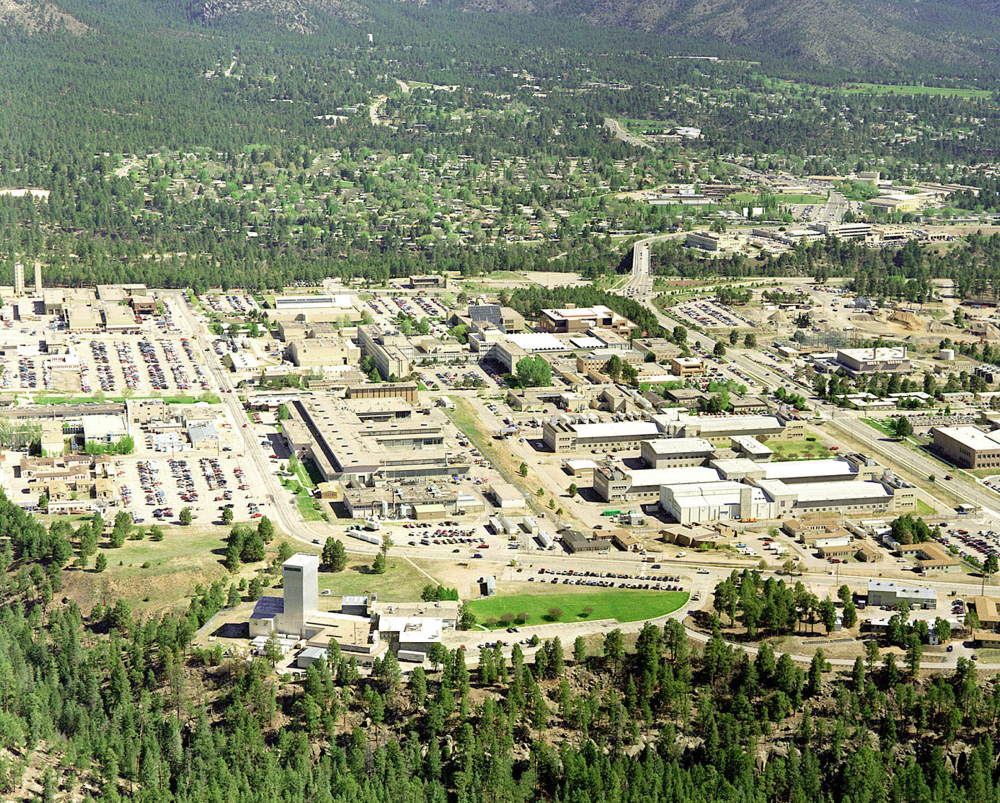
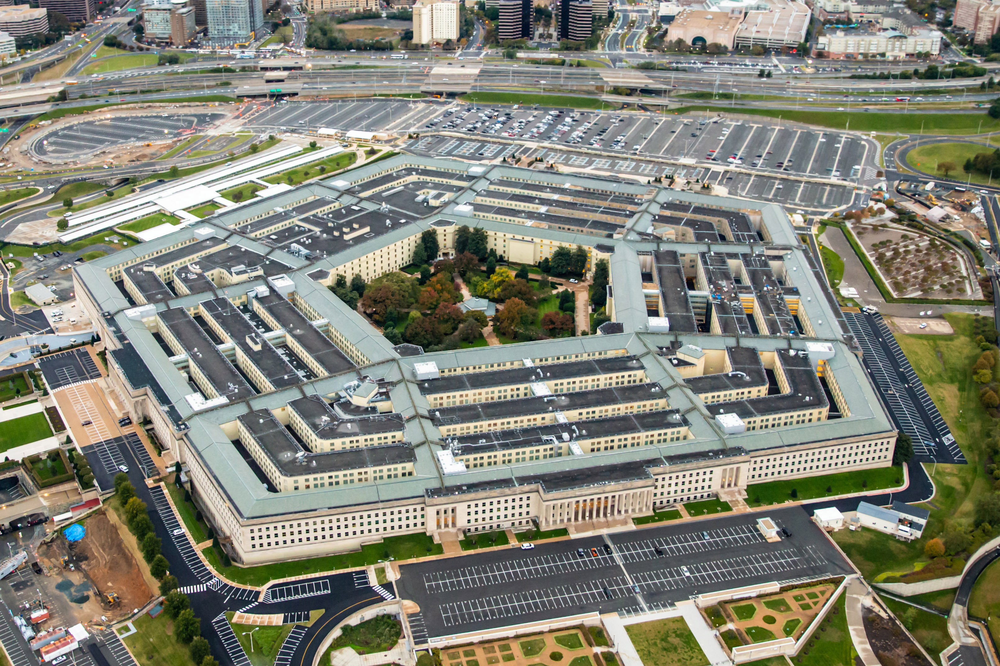

Hay un momento en que una mentira se vuelve demasiado grande para seguir conteniéndola. No la derriban sus adversarios. La derrumba su propio peso. Lo que está ocurriendo hoy en el corazón del sistema de seguridad nacional de Estados Unidos —el más complejo, más financiado y más hermético que ha existido en la historia moderna— responde exactamente a esa mecánica. No es una revelación voluntaria. Es una fractura acumulada durante décadas.
La pregunta que corresponde hacerse no es si hay algo que ocultar. Eso ya está resuelto: lo hay, y el propio gobierno lo ha admitido en fragmentos. La pregunta real es otra: ¿qué queda en pie cuando un Estado lleva ochenta años mintiendo a sus propios ciudadanos, a su propio Congreso, y la presión ya no puede contenerse?
Acto I — Roswell y la primera mentira institucional

// Foto: Fox News Archive · 1947 / archivo
El rancho Mac Brazel, en las afueras de Roswell, Nuevo México — primer escenario del encubrimiento moderno más documentado de EE.UU.
El 8 de julio de 1947, la oficina de prensa de la base aérea de Roswell, Nuevo México, emitió un comunicado que sacudió al mundo: el Ejército había recuperado los restos de un "disco volador". Veinticuatro horas después, el comunicado fue reemplazado por otra versión: era un globo meteorológico. Ese ciclo de revelación-corrección-minimización, que duró menos de dos días, marcó el patrón que el aparato de seguridad estadounidense repetiría durante las ocho décadas siguientes.
El coronel William Blanchard, comandante de la base, había autorizado el primer comunicado. El general Roger Ramey, su superior, lo desmintió horas después ante las cámaras. Testigos locales —el ranchero Mac Brazel, el sheriff George Wilcox, el oficial Jesse Marcel— describieron materiales que no reconocían: fragmentos metálicos extremadamente livianos, marcas en las superficies, restos que no se doblaban ni se quemaban con normalidad. Marcel, quien dirigió la recuperación inicial, diría años después que lo que recogió del campo no era nada que hubiera visto antes ni después en su carrera militar.
// Comunicado oficial · Base Aérea de Roswell · 8 julio 1947
"La oficina de inteligencia del 509.° Grupo de Bombardeo tuvo la fortuna de recuperar en su poder un disco volador." — Reemplazado por la versión del "globo meteorológico" menos de 24 horas después.
Fuente: Archivo público de la RAAF · Office of Public Information · Roswell, NMLo que hace relevante a Roswell no es la certeza de lo que cayó, sino lo que sucedió después: el patrón institucional de ridiculización, silenciamiento de testigos y reclasificación de documentos que se convertiría en norma operativa. El precedente no fue el objeto. Fue la respuesta al objeto.
Acto II — JFK y el mapa de los silenciados
El 22 de noviembre de 1963, en Dallas, John F. Kennedy fue asesinado. La Comisión Warren concluyó en 1964 que Lee Harvey Oswald actuó solo. El Comité Selecto de Asesinatos del Congreso llegó en 1979 a una conclusión diferente: hubo probable conspiración. Miles de documentos permanecieron clasificados durante décadas. Trump ordenó desclasificaciones parciales en 2017 y 2021; Biden hizo lo mismo. Pero no todos los archivos han sido liberados, y los que lo fueron generaron más preguntas que respuestas.
Lo que conecta el caso Kennedy con el fenómeno más amplio que se analiza aquí no es la teoría en sí, sino la mecánica institucional: la capacidad del aparato de seguridad nacional para mantener secretos frente al propio Congreso, durante décadas, con herramientas legales diseñadas para ello. La CIA, el FBI, los Servicios Secretos —cada agencia con sus propios archivos, sus propias razones para no compartir, su propio presupuesto negro.
"Los gobiernos mienten sistemáticamente, especialmente sobre asuntos de seguridad nacional. No porque sean todos malvados, sino porque el sistema está construido para ello. La clasificación no protege la seguridad: protege la narrativa."
— Daniel Ellsberg · Analista del Pentágono · Autor de Los Papeles del Pentágono · 1971Ellsberg sabía de lo que hablaba: filtró al New York Times los Papeles del Pentágono, documentos que demostraban que el gobierno de Lyndon Johnson había mentido al Congreso y al pueblo sobre el alcance de la guerra de Vietnam. Lo que reveló Ellsberg en 1971 no fue solo una guerra: fue el funcionamiento interno de un Estado que había aprendido a mentir por protocolo.
// Patrón histórico
Cuando el encubrimiento se vuelve sistémico
El Watergate (1972), el escándalo Irán-Contra (1986), los programas de vigilancia masiva revelados por Edward Snowden (2013). Cada episodio añadió capas al mismo retrato: una estructura de poder que opera en paralelo al gobierno visible, con financiamiento opaco, sin rendición de cuentas, y con la capacidad de silenciar a quienes amenazan con hablar.
El patrón estadístico de personas con acceso a información sensible que mueren en accidentes, suicidios o enfermedades repentinas antes de declarar o publicar es lo suficientemente consistente como para que académicos de derecho y periodismo de investigación lo estudien como fenómeno documentado.
Acto III — Bob Lazar: la fisura que nadie pudo cerrar

// Foto: Getty Images · Área 51 · Groom Lake, Nevada
La instalación clasificada de la Fuerza Aérea en Nevada. A pocos kilómetros, según Bob Lazar, existe una instalación subterránea llamada S-4.
En mayo de 1989, un hombre apareció en una entrevista televisiva en la estación KLAS de Las Vegas, con la cara en sombra y bajo el seudónimo "Dennis". Afirmó haber trabajado en una instalación subterránea llamada S-4, ubicada a pocos kilómetros del complejo conocido como Área 51, en Nevada. Dijo que su tarea era analizar sistemas de propulsión de origen no humano. Que había nueve naves. Que el combustible era un elemento con el número atómico 115, que entonces no existía en la tabla periódica conocida.
Meses después, el hombre reveló su identidad: Robert Scott Lazar. Y comenzó uno de los debates más polarizados de la historia reciente de la ufología.
"El elemento 115 es el combustible. Genera un campo gravitacional que dobla el espacio-tiempo alrededor de la nave. No se trata de propulsión convencional."
— Bob Lazar · Declarante · S-4 / Área 51 · 1989El elemento 115 fue sintetizado en laboratorio en 2003 —catorce años después— y confirmado en 2016 como el moscovio (Mc) en la tabla periódica oficial. Sus detractores argumentan que Lazar podría haberlo leído en publicaciones científicas de la época. Sus defensores señalan que en 1989 nadie en el público general hablaba de ese elemento, y que la descripción técnica de Lazar precedió su confirmación por más de una década.
// Ficha · Bob Lazar · El caso en sus términos
Lo que se puede verificar y lo que no
Verificado: El elemento 115 (moscovio) fue confirmado en 2016, 27 años después de que Lazar lo describiera. Formularios W-2 suyos han circulado mostrando empleo gubernamental en 1989. Un artículo de 1982 en un periódico local lo identifica como empleado del área de Los Álamos.
No verificado: Sus títulos académicos en MIT y Caltech no tienen registro. Su posición en Los Álamos fue la de técnico contratista, no físico. Sus registros académicos no existen —lo que sus defensores atribuyen a borrado deliberado por parte de agencias.
2026: El documental S4: The Bob Lazar Story, dirigido por Luigi Vendittelli tras cuatro años de trabajo con Lazar, reconstruyó en tres dimensiones las instalaciones descritas. Llegó al número uno en Amazon Prime Video en EE.UU.
Lo que Lazar instaló en el imaginario colectivo —con independencia de si su relato es literal, parcial o construido— fue la idea de que el gobierno no solo sabía: había estado trabajando con tecnología de origen desconocido durante años. Esa idea no se ha podido desinstalar desde 1989.
Acto IV — Grusch y el Congreso: la fractura se vuelve oficial

// Foto: AP Photo / Nathan Howard · 26 julio 2023
David Grusch presta juramento ante el Subcomité de Seguridad Nacional de la Cámara. Primera audiencia sobre UAP en más de 50 años.
El 26 de julio de 2023, por primera vez en más de cincuenta años, el Congreso de Estados Unidos celebró una audiencia formal sobre fenómenos aéreos no identificados. Tres exmilitares testificaron bajo juramento. El que cambió la conversación fue David Charles Grusch.
Grusch no era un entusiasta de los ovnis. Era un exoficial de inteligencia de la Fuerza Aérea con catorce años de servicio, nivel de acceso secreto compartimentado, y la posición de representante de la Oficina Nacional de Reconocimiento ante el Grupo de Trabajo sobre Fenómenos Aéreos No Identificados del Departamento de Defensa. Un hombre del sistema, hablando desde dentro del sistema, sobre lo que el sistema ocultaba.
// Testimonio bajo juramento · Congreso de EE.UU. · 26 julio 2023
"Fui informado, en el curso de mis deberes oficiales, de un programa de varias décadas para recuperar restos de accidentes de UAP y de ingeniería inversa. Mi testimonio está basado en información que me han dado individuos con un largo historial de legitimidad y servicio a este país."
Fuente: David Grusch · Subcomité de Seguridad Nacional, Frontera y Asuntos Exteriores · Comité de Supervisión de la CámaraGrusch declaró que el gobierno federal posee naves de origen no humano, incluidos restos biológicos de sus operadores. Que esos programas fueron financiados mediante mecanismos presupuestarios ocultos, sin conocimiento del Congreso. Que personas habían sido eliminadas para mantener el secreto. Que él personalmente había entrevistado a más de cuarenta testigos con acceso directo y credenciales verificables.
La respuesta del Pentágono fue sistemática: negación. La portavoz Sue Gough afirmó que la AARO —la oficina creada para investigar estos fenómenos— no había encontrado evidencia verificable. Sean Kirkpatrick, director de la AARO, sostuvo que Grusch se había negado a hablar con la oficina. Grusch respondió que lo había hecho, y que Kirkpatrick lo había ignorado. Kirkpatrick fue criticado posteriormente por legisladores de ambos partidos por no haber investigado activamente las denuncias.
// El Congreso intenta recuperar el control
Lo que siguió al testimonio de Grusch fue significativo. El Senado, con apoyo bipartidista de Chuck Schumer y Mike Rounds, impulsó la Ley de Divulgación de UAP. El concepto central era extraordinario: aplicar el "dominio eminente" —una herramienta legal usada para expropiar propiedades privadas de utilidad pública— sobre cualquier tecnología de origen desconocido en manos de contratistas privados de defensa. Era el Congreso intentando recuperar el control sobre secretos que el sector privado había heredado del Estado.
"Durante décadas, al pueblo americano le han tratado como a niños, diciéndoles que hay secretos que no tienen derecho a conocer. El problema es que todo ha sido trasladado a entidades privadas para que no exista la Ley de Libertad de Información."
— Tim Burchett · Representante republicano por Tennessee · Congreso de EE.UU. · Junio 2026En febrero de 2026, el presidente Trump ordenó a las agencias federales liberar archivos relacionados con UAP. En abril de ese año, Grusch habló en el primer panel sobre fenómenos no identificados en el National Space Symposium. En junio de 2026, frente al Capitolio, volvió a exigir desclasificación presidencial de archivos específicos que ya ha identificado ante organismos de supervisión de inteligencia. El sistema que durante décadas ridiculizó el tema ahora lo investiga oficialmente.
Acto V — Los doce: científicos muertos y la conexión JPL / Los Álamos

// Foto: NASA / JPL-Caltech · Pasadena, California
El Laboratorio de Propulsión a Chorro de la NASA — principal centro de exploración espacial, y núcleo institucional del patrón de muertes y desapariciones.
En febrero de 2026, el astrofísico Carl Grillmair fue asesinado a tiros en el porche de su casa en Llano, California. Tenía 67 años y trabajaba en el Centro de Procesamiento y Análisis Infrarrojo de Caltech, la institución que gestiona el Laboratorio de Propulsión a Chorro de la NASA. El sospechoso detenido no tenía relación conocida con la víctima. El móvil no fue revelado.
Ese crimen fue el detonador visible de algo que ya estaba acumulándose. Desde 2022, al menos doce personas con vínculos a programas nucleares, aeroespaciales o de defensa clasificada en Estados Unidos han muerto o desaparecido en circunstancias que el FBI calificó de suficientemente anómalas como para investigar si existe alguna conexión. El Comité de Supervisión de la Cámara de Representantes envió cartas al Departamento de Energía, al Departamento de Defensa, al FBI y a la NASA, describiendo la situación como una potencial "conexión siniestra" con implicaciones directas para la seguridad nacional.
| Nombre | Vínculo institucional | Año | Estado |
|---|---|---|---|
| Amy Eskridge | Proyectos de propulsión avanzada · Huntsville, Alabama | 2022 | Muerta |
| Ingrid Coleen Lane | Investigadora · Nuevo México | 2023 | Desaparecida |
| Michael David Hicks | JPL / NASA · 25 años · Cometas y asteroides | 2023 | Muerto |
| Frank Maiwald | JPL / NASA · Espectrometría · Pasadena | 2024 | Muerto |
| Anthony Chávez | Los Álamos · Supervisión de armas nucleares | 2025 | Desaparecido |
| Monica Reza | JPL / NASA · Directora Grupo de Procesamiento de Materiales | 2025 | Desaparecida |
| Melissa Casias | Laboratorio Nacional de Los Álamos | 2025 | Hallada sin vida |
| Steven García | Campus de Seguridad Nacional de Kansas City · Componentes de defensa | 2025 | Desaparecido |
| Jason Thomas | Novartis · Biología química · Wakefield | 2025–26 | Hallado sin vida |
| Carl Grillmair | Caltech / JPL · Astrofísico · Llano, California | 2026 | Asesinado |
| William Neil McCasland | General retirado USAF · Cmdte. Air Force Research Laboratory | 2026 | Desaparecido |

// Foto: Los Alamos National Laboratory · Nuevo México
El Laboratorio Nacional de Los Álamos — fundado por el Ejército durante el Proyecto Manhattan y hoy bajo el Departamento de Energía. Nodo central de las desapariciones.
// Patrón geográfico e institucional
Dos laboratorios, un patrón
La mayoría de los casos están vinculados a dos instituciones concretas: el Laboratorio de Propulsión a Chorro (JPL), principal centro de exploración espacial de la NASA, y el Laboratorio Nacional de Los Álamos (LANL), fundado por el Ejército durante el Proyecto Manhattan y actualmente bajo el Departamento de Energía.
El general retirado William McCasland —desaparecido en Albuquerque el 27 de febrero de 2026, dejando su teléfono, sus lentes y todos sus dispositivos en casa— había colaborado directamente con Monica Reza en investigaciones aeroespaciales y de defensa altamente sensibles. Dos personas del mismo ecosistema de investigación, desaparecidas con meses de diferencia.
El FBI ha iniciado investigación formal. El Congreso ha enviado cartas de supervisión a cuatro agencias federales. Hasta la fecha, no hay ninguna respuesta pública definitiva.
Las familias de varios de los fallecidos han salido a decir que no creen en juego sucio. Investigadores locales han descartado intervención de terceros en varios casos. Esas declaraciones son importantes y deben tomarse en cuenta. Pero la concentración estadística —en instituciones específicas, en un lapso específico, con perfiles específicos— supera lo que cualquier analista de riesgo clasificaría como coincidencia ordinaria.
Acto VI — Las tensiones geopolíticas como contexto imposible de ignorar

// Foto: Departamento de Defensa de EE.UU. · Arlington, Virginia
El Pentágono — la estructura que administra el mayor presupuesto de defensa del mundo y los programas más secretos del siglo XX.
Todo esto ocurre en un momento en que el mapa geopolítico global está siendo reconfigurado con una velocidad que no se veía desde la posguerra. Rusia en Ucrania. China en el Mar del Sur. Corea del Norte con capacidad de alcance intercontinental. Irán en el umbral nuclear. El BRICS expandiéndose. El orden unipolar que siguió a la Guerra Fría se erosiona en tiempo real.
En ese contexto, la pregunta sobre los UAP no es solo metafísica. Es estratégica. Si parte de la tecnología aeroespacial avanzada que opera en espacio aéreo de EE.UU. fuera de origen adversario —drones hipersónicos chinos o rusos, sistemas de reconocimiento de última generación— la narrativa del "fenómeno no humano" podría estar funcionando, deliberadamente o no, como cobertura para no admitir una brecha de seguridad catastrófica.
"El motivo actual sobre el fenómeno UAP podría ser un intento del ejército de EE.UU. de generar confusión estratégica sobre sus capacidades reales, o de encubrir el hecho de que tecnología adversaria está penetrando su espacio aéreo sin ser interceptada."
— Gareth Nicholson · Editor · South China Morning PostEs una hipótesis que los propios analistas del Pentágono han circulado internamente. No excluye la posibilidad de que algunos fenómenos sean genuinamente inexplicables. Pero añade una capa de complejidad que convierte la discusión en algo más urgente que la pregunta sobre vida extraterrestre: si hay tecnología desconocida sobrevolando instalaciones nucleares estadounidenses —como han reportado pilotos de la Marina desde 2014— el problema no es ontológico. Es de seguridad nacional inmediata.
Línea de tiempo: el resquebrajamiento en ocho hitos
Julio 1947
Roswell — La primera corrección
La base aérea anuncia la recuperación de un "disco volador". En menos de 24 horas, la narrativa cambia a "globo meteorológico". El patrón queda establecido para los siguientes ochenta años.
Noviembre 1963
Dallas — El asesinato que no cierra
Kennedy muere. La Comisión Warren concluye que Oswald actuó solo. El Comité de Asesinatos del Congreso concluye en 1979 que hubo probable conspiración. Archivos siguen sin liberarse completamente en 2026.
Mayo 1989
Bob Lazar rompe el silencio sobre S-4
Primera declaración pública de un supuesto empleado de instalaciones clasificadas vinculadas al Área 51. Menciona el elemento 115. El moscovio es confirmado en la tabla periódica en 2016, 27 años después.
Diciembre 2017
NYT publica el programa AATIP
El New York Times revela la existencia del programa de identificación de amenazas aeroespaciales avanzadas del Pentágono. Primera admisión oficial de investigación sistemática de UAP. El video del "Tic Tac" se hace público.
Junio 2021
Informe oficial del Pentágono sobre UAP
La Oficina del Director de Inteligencia Nacional publica el primer informe gubernamental formal sobre fenómenos aéreos no identificados. Documenta 144 casos. No puede explicar 143 de ellos.
Julio 2023
Grusch ante el Congreso — 50 años de silencio roto
Primera audiencia congresional sobre UAP en más de cincuenta años. Grusch testifica bajo juramento sobre programas de recuperación de naves no humanas, financiamiento opaco y personas eliminadas. El Pentágono niega.
2022 – 2026
Doce científicos — JPL y Los Álamos
Una serie de muertes y desapariciones vinculadas a los dos laboratorios más sensibles de EE.UU. alcanza cifras que el FBI considera suficientes para investigar su posible conexión. El Congreso abre supervisión formal.
Febrero 2026
Trump ordena desclasificación · McCasland desaparece
El presidente Trump ordena a agencias federales liberar archivos UAP. El mismo mes desaparece el general William McCasland, ex comandante del Air Force Research Laboratory, dejando todas sus pertenencias en casa.
¿Qué está realmente quebrándose?
Hay tres lecturas posibles de todo lo que se ha expuesto aquí, y las tres tienen sustento empírico.
La primera es la del oscurantismo acumulado: décadas de clasificación excesiva, financiamiento opaco y ridiculización sistemática de testigos crearon una presión que eventualmente no pudo contenerse. Lo que estamos viendo ahora no es transparencia voluntaria. Es fuga por las fisuras. El Congreso empujó porque la presión civil, periodística y de ex funcionarios lo obligó. La desclasificación llega en fragmentos y dosificada.
La segunda es la del ruido estratégico: la narrativa UAP funciona como pantalla conveniente para no admitir que adversarios tecnológicos han penetrado el espacio aéreo y los sistemas de defensa estadounidenses. Si lo que sobrevuela las instalaciones nucleares es tecnología china o rusa, decir "no lo sabemos" es menos catastrófico políticamente que decir "no podemos detenerlo".
La tercera, que no excluye a las otras dos, es la del sistema fragmentado: no hay un actor central con control total del secreto. Hay facciones dentro del Pentágono, la CIA, la NSA, contratistas privados como Lockheed Martin o Raytheon, que poseen piezas distintas de la misma historia y tienen intereses distintos. Algunos quieren revelar. Otros quieren proteger contratos. Otros, preservar sus posiciones.
"No creo que haya una conspiración centralizada para ocultar esto. Creo que hay una burocracia descentralizada en la que cada parte protege su propia parcela de secretos, y el resultado agregado es que nadie tiene el cuadro completo, incluido el Congreso."
— Christopher Mellon · Ex Subsecretario de Defensa para Inteligencia · PentágonoLo que Mellon describe no es un plan maestro de encubrimiento. Es algo potencialmente más inquietante: un sistema tan compartimentado que ya no sabe lo que sabe, y en el que la transparencia no llegará por voluntad política sino por la presión acumulada de personas que, como Grusch, decidieron que el secreto no valía más que su conciencia.
La fisura ya está abierta. La pregunta ya no es si el sistema miente. La pregunta es cuánto de la verdad puede soportar.
Fuentes documentales: CNN en Español, Euronews, Telemundo, The Independent Español, Libertad Digital (casos científicos) · Wikipedia ES / wemoral.com / zonadeexclusion.com / lebastias.wordpress.com (testimonio Grusch) · Fox News Archive / Getty Images / NASA-JPL / DoD (imágenes) · Declaración original RAAF, 8 julio 1947 (Roswell) · Nota editorial: las afirmaciones de Grusch, Lazar y otros declarantes son reproducidas como testimonios, no como verdades verificadas de forma independiente.
// Preguntas que siguen abiertas
- ¿Existe un vínculo real entre las muertes y desapariciones de científicos vinculados al JPL y Los Álamos, o la proximidad estadística es circunstancial?
- ¿Por qué la tecnología UAP parece mostrar interés específico por instalaciones nucleares, según reportes de pilotos militares desde 2014?
- Si hay programas de ingeniería inversa en manos de contratistas privados, ¿quién los financia actualmente y con qué nivel de supervisión?
- ¿La desclasificación ordenada por Trump en 2026 es genuina o está diseñada para liberar fragmentos que no dañen los programas centrales?
- ¿Cuántos de los testigos entrevistados por Grusch bajo confidencialidad están dispuestos a dar el siguiente paso y testificar públicamente?
- ¿El silencio sobre los científicos desaparecidos está siendo protegido por las propias familias, por las instituciones, o por algo más?
// Comentarios